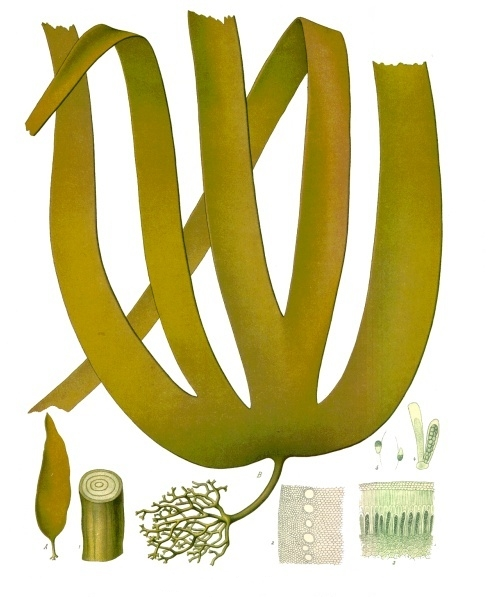

Sous la mer, en montagne, sur nos côtes et dans nos rues
Œuvre de fiction radiophonique : les reporters sont fictifs, mais tous les faits évoqués sont réels, datés et sourcés.
🎧 Écoutez l'épisode : Le Journal des Bonnes Nouvelles — Édition 3, 12 min 58 — Écouter sur Spotify →
Bienvenue dans le troisième épisode du Journal des Bonnes Nouvelles, ce rendez-vous mensuel fondé sur des faits datés et sourcés. Au sommaire : une forêt sous-marine qui renaît algue après algue au large du Pouliguen, les tourbières des Hautes-Vosges restaurées, la pointe de l'Estérel rendue au public et les fêtes d'Octobre Rose. Nous finirons par la note du sourire.
Sous quelques mètres d'eau, au large du Pouliguen, se joue l'une des expériences marines les plus encourageantes de France : la renaissance d'une forêt de laminaires, ces algues brunes en rubans qui abritent plus de 1 000 espèces. Une étude a montré que 90 % d'entre elles avaient disparu entre 1995 et 2014, victimes de la pollution, du dragage et des herbiers.
Le retraité Jean-Claude Ménard et son association Estuaires Loire Vilaine, avec la station biologique de Roscoff (CNRS/Sorbonne), ont décidé de ne pas se résigner. Fin 2023, des algues génitrices ont été prélevées, leurs spores cultivées en écloserie, puis réintroduites en mer en août 2024 près de l'îlot des Evens. Elles sont passées de 3 à 4 cm à environ 80 cm et se reproduisent désormais seules. Le fonds de dotation d'Océanopolis soutient l'opération trois ans, pour ouvrir trois sites entre Le Croisic et le Pouliguen.

Une tourbière n'est pas une simple zone humide : c'est une éponge millénaire qui stocke du carbone, retient l'eau des pluies torrentielles, la restitue lors des sécheresses, filtre les polluants et abrite une biodiversité rare. Drainées, exploitées, desséchées, elles avaient perdu ce rôle.
Le département des Vosges recense environ 400 entités tourbeuses, dont 38 sont visées par la campagne des Hautes-Vosges, pilotée par le conservatoire d'espaces naturels de Lorraine. Sur le terrain, on ne construit pas, on répare : barrages dans les anciens drains, fossés centenaires rebouchés, secteurs desséchés réhumidifiés, et un étrépage ciblé sur les zones dégradées.
Sur la presqu'île de Giens, dans le Var, la pointe de l'Estérel, longtemps interdite au public, a été inaugurée le 5 octobre 2026 après un chantier de restauration et de renaturation. Le Conservatoire du littoral, la métropole Toulon Provence Méditerranée et le parc national de Port-Cros ont mené les travaux sur 2 hectares, pour environ 165 000 €, dont 79 425 € via Mission Nature et 52 950 € de la Région Sud.
Les clôtures ont disparu, les espaces dégradés ont été renaturés et replantés d'espèces locales, des pierriers créés pour les reptiles. L'ancien cinéthéodolite est devenu un belvédère, et des grilles adaptées laissent les chauves-souris occuper les ouvrages. La devise résume l'ambition : « protéger sans fermer, accueillir sans dégrader ».
En octobre, la campagne Octobre Rose 2026 invite partout en France au dépistage du cancer du sein. Le message est simple : un examen clinique des seins dès 25 ans, une fois par an. Ce qui change, c'est la forme : communes, clubs et associations transforment le dépistage en fêtes.
À Roncq, dans le Nord, une marche est suivie d'un après-midi dansant, au profit de Mon Bonnet Rose, Laet's Go et Les Vies Denses. À Villers-Guislain, « Des pas & des pattes » propose une marche de 5,5 km, avec ou sans chien. À Villeneuve-d'Ascq, un club de tennis ouvre ses ateliers de tennis santé et de padel. À Tallard (05), le Color Run Solidaire 2026 fait courir sous une pluie de poudre rose.
Pas de chronique, seulement des gestes observés. Une fromagère qui déguise son fromage le plus cher en « invendu de la semaine » pour que la dame âgée du mardi l'emporte fièrement. À la sortie d'une école, un père répare en dix minutes la poussette d'un autre. Dans un parc, un guitariste ne joue que les morceaux que fredonne un vieil homme sur son banc. Dans le tram, une adolescente se lève sans bruit pour un voyageur fatigué, laissant un billet plié en origami : « courage pour la suite ».
Et puis ce parapluie immense qui s'ouvre au-dessus de deux inconnus et les accompagne jusqu'à leurs portes. Rien de tout cela ne passera à la télévision, et c'est très bien ainsi.
Sous la mer, en montagne, sur nos côtes et dans nos rues, des gens s'affairent à réparer, restaurer, accueillir et consoler. Le monde ne va pas mieux tout seul : il va mieux grâce à eux. Gardez le sourire et rendez-vous au prochain épisode.
Sources : Vert.eco · Vosges Matin · Liti.fr · Mon Bonnet Rose — Octobre Rose 2026.